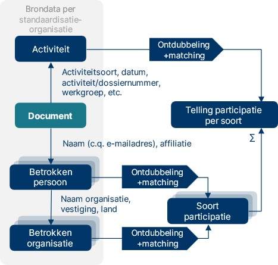

Titel staat in config.js
ICTU Document
Document
- Redacteur:
- Auteur:
Dit document valt onder de volgende licentie:

Creative Commons Attribution 4.0 International Public License
Dit document valt onder de volgende licentie:
Creative Commons Attribution 4.0 International Public License
Tekst
Dit is een document zonder officiële status.
De kwantitatieve analyse beoogt in kaart te brengen in welke mate Nederlandse organisaties vertegenwoordigd zijn in standaardisatietrajecten bij de elf genoemde standaardisatie-organisaties.
Voor de doeleinden van dit onderzoek wordt participatie beschouwd als deelname aan de vormgeving van internationale normen of standaarden. Hier maken wij onderscheid tussen drie verschillende eigenschappen van participatie: representatievorm, participatieobject en participatiemethode. Hieronder zetten wij deze drie uiteen.
Representatievorm
De representatievorm is de wijze waarin een belang vertegenwoordigd wordt bij een internationale standaardisatie-organisatie. In dit onderzoek staan Nederlandse belangen voorop; d.w.z. de belangen van Nederlandse organisaties. Afhankelijk van de structuur van de SDO kunnen deze verschillen tussen SDO’s.
We onderscheiden de volgende representatievormen:
Landelijke afvaardiging. Bij een aantal SDO’s is sprake van nationale vertegenwoordiging in plaats van directe vertegenwoordiging door organisaties. Een land is lid van het standaardisatie-orgaan en wordt geacht als land inbreng te hebben en te stemmen. In Nederland wordt dat belang opgesteld binnen NEN. NEN heeft normcommissies, die gespiegeld zijn aan de internationale werkgroepen. Nederlandse organisaties kunnen dus als NEN-lid aansluiten bij die normcommissies en als afgevaardigde deelnemen aan het opstellen van standaarden bij de SDO’s
Individuele vertegenwoordiging. Bij enkele SDO’s kunnen individuen lid worden, al dan niet namens een organisatie. Deze affiliatie is dus optioneel. In de scope van dit onderzoek zijn zowel directe individuele vertegenwoordiging van Nederlanders als Nederlandse affiliatie relevant. Dat eerste valt echter niet te bepalen van individuen. Ook hier wordt dus primair gekeken naar de affiliatie die wordt opgegeven.
Organisatievertegenwoordiging. Vaak kunnen organisaties lid worden van SDO’s. In dat geval kunnen zij elk individu vragen hun belang te vertegenwoordigen bij de commissies van de SDO’s.
Onderstaande Tabel 1 laat zien welke representatievorm de onderzochte SDO’s hanteren.
Tabel 1. Representatievorm per onderzochte SDO. Met een “x” is aangegeven of een representatievorm bij een SDO aanwezig is.
| SDO | Landelijke afvaardiging | Individuele vertegenwoordiging | Organisatie-vertegenwoordiging |
|---|---|---|---|
| 3GPP | X | ||
| CEN | X | ||
| CENELEC | X | ||
| ETSI | X | ||
| IEC | X | ||
| IEEE-SA | X | X | |
| IETF | X | X | |
| ISO | X | ||
| ITU | X | X | |
| OASIS | X | ||
| W3C | X | ||
| NB: Er zijn in sommige gevallen afwijkingen mogelijk, de norm is hier weergegeven. Zo kan er bijvoorbeeld wel sprake bij van vertegenwoordiging als expert bij CEN, CENELEC, ISO en IEC. |
Toegepast op Nederlandse participatie staat voorop dat de organisatie Nederlands is. Via landelijke afvaardiging is dat gegarandeerd, via de andere twee vormen is dat waar de kern van de kwantitatieve analyse ligt. In onderstaande box lichten we de categorieën van Nederlands belang toe.
Definitie van ‘Nederlandse’ organisaties
Op de vraag of een organisatie ‘Nederlands’ is, zijn meerdere antwoorden mogelijk. Gelet op het doel van het onderzoek gaat het om organisaties waarvan de participatie in standaardisatie (uiteindelijk) een bijdrage levert aan de Nederlandse economie. In dat kader onderscheiden we de volgende gradaties van het ‘Nederlands zijn’ van organisaties:
Nederlandse organisaties (ingeschreven bij de Kamer van Koophandel) zonder (noemenswaardige) internationale vestigingen, zoals bijvoorbeeld TNO.
Nederlandse organisaties (hoofdkantoor in Nederland) met internationale vestigingen, bijvoorbeeld Philips (hoofdkantoor in Amsterdam).
Nederlandse vestigingen van buitenlandse organisaties (hoofdkantoor niet in Nederland), bijvoorbeeld Ericsson (vestiging in Rijen, hoofdkantoor in Zweden).
Nederlandse ‘brievenbusholdings’ van buitenlandse organisaties (organisatie is formeel gevestigd in Nederland, maar alleen om administratieve/fiscale reden; het merendeel van de activiteiten vindt in het buitenland plaats). Een voorbeeld hiervan is (het voormalige) Alcatel.
Nederlandse overheidsorganisaties/overheidsonderdelen. Hierbij onderscheiden we:
Formele vertegenwoordigers van de Nederlandse overheid (in deze dataset slechts EZ, bij andere SDO’s kunnen dit andere organisaties zijn)
Organisatie-onderdelen van de Nederlandse overheid, waaronder van de Rijksoverheid, provincies, gemeenten, waterschappen, ZBOs en overheidsstichtingen, zoals Geonovum.
Nederlanders (personen met Nederlandse nationaliteit) die op persoonlijke titel deelnemen in standaardisatie-organisaties, bijvoorbeeld individuele deelnemers aan IETF.
Categorie 4 is in overleg door de opdrachtgever in dit onderzoek buiten de afbakening van het onderzoek geplaatst.
Participatieobject
Participatie kan binnen een SDO op verschillende niveaus. Wij hanteren drie verschillende objecten, met een beperkt onderscheid: Beleidscommissies, technische commissies, werkgroepen en standaarden. Hierin zit een hiërarchische structuur:
Beleidscommissies gaan over de organisatie en strategie van de SDO.
Technische commissies gaan over een standaard en voeren daar de regie.
Werkgroepen diepen onderdelen van het programma van een technische commissie uit.
Tussen de SDO’s bestaan grote verschillen in organisatiestructuur. Bovenstaande is gesimplificeerd om de SDO’s vergelijkbaar te maken.
Participatiemethode
Participeren kan op verschillende manieren. Wij onderscheiden er hier vijf, hoewel deze onderscheiden niet allemaal (c.q. voor alle SDO’s) gemaakt kunnen worden, omdat de stemmingen niet beschikbaar zijn in dit onderzoek. Deze methoden zijn:
Lidmaatschap van een commissie of werkgroep.
Vervulling van formele rollen binnen een commissie of werkgroep. Bijvoorbeeld een voorzitterschap, secretariaat of een editorrol bij een standaard.
Deelname aan overleggen van een commissie of werkgroep.
Indienen van technische contributies voor een overleg van een werkgroep.
Stemmen over de inhoud van standaarden of beleid (zeldzaam, consensus heeft de voorkeur).
Volledig participatiemodel
Samen maken participatieobject, participatievorm en representatievorm een participatie. Dit is in figuur 1 volledig weergegeven voor individuele vertegenwoordiging. Langs dit model kan elke participatie worden geformuleerd volgens de volgende algemene vorm:
Persoon X
Optioneel: Namens organisatie Y
Is lid van/vervult formele rol/ neemt deel aan overleg/dient contributie in/stemt
Bij werkgroep/commissie Z
Optioneel: Als [rol]
Optioneel: Op datum [dd-mm-jjjj]
De gegevens die in dit onderzoek zijn verzameld, zijn in dit format samengevoegd voor een vergelijkbare structuur tussen SDO’s.
Figuur 1 hieronder toont het participatiemodel voor individuele vertegenwoordiging, met de persoon en organisatie, die met een participatievorm (lidmaatschap, formele rol, deelname aan overleg, technische contributie of stemming) op één van de drie niveaus (beleidscommissie, technische commissie of werkgroep) binnen SDO's participeren.
Figuur 1. Voorbeeld van een volledig uitgewerkt participatiemodel voor individuele vertegenwoordiging

Stap 1. Toegang tot bronnen verkrijgen
Om deze participaties in kaart te brengen verzamelen wij beschikbare documentatie over de werkgroepen en deelnemers. Hiertoe hebben wij een aantal gegevensbronnen:
Gegevens van NEN en gesprekken met NEN.
Openbare gegevens van de SDO’s. Dit betreft gegevens die zij via een website of API beschikbaar maken.
Voor ETSI en 3GPP heeft het Ministerie van EZ onderzoekers toegang gegeven om gegevens uit het portal te halen. Deze gegevens zijn niet voor andere doeleinden gebruikt dan de kwantitatieve analyse. Voor ITU is ook toegang verleend, maar daar was geen toegang zonder lidmaatschap van werkgroepen, wat te ver ging voor dit onderzoek.
Voor IEC en ISO heeft NEN gegevens opgevraagd.
De gegevens die dit betreft wisselen per SDO, mede afhankelijk van de structuur. In alle gevallen is het onderzoek beperkt tot de gegevens die beschikbaar zijn. Waar mogelijk is gezocht naar toegang (via NEN en EZ). In de hoofdlijn is de procedure over alle SDO’s identiek: Uit de bronnen halen wij documenten op (doorgaans webpagina’s, in sommige gevallen API-responses of bestanden).
In deze documenten, waarvan het bestaan duidt op een bepaalde activiteit binnen een standaardisatieproces, zijn veelal namen van personen en organisaties te vinden. In sommige gevallen is hierbij een aanduiding van een filiaal en/of land te vinden.
Op basis van deze documenten kan een telling worden uitgevoerd van participatie aan standaardisatie, die kan worden uitgesplitst op eigenschappen van de betrokkenen. Hierbij speelt echter een aantal randvoorwaarden:
De opgehaalde documenten moeten een volledig of anders representatief beeld geven van de standaardisatie-activiteiten;
De informatie over participatie/deelname kan herleid worden naar een organisatie (bedrijf)
De namen van personen en organisaties moeten consistent zijn, of ontdubbeld kunnen worden.
In dit onderzoek ligt de focus op elf SDO’s, elk met hun eigen werkwijze en bijbehorende formats en procedures rondom het publiceren van de bovengenoemde informatie. De uitdaging binnen dit onderzoek is dan ook (1) het omgaan met deze variatie en (2) het combineren van de resultaten tot een consistente telling. Figuur 2 geeft een schematische weergave van telling van participatie: Startpunt is een document. Daaruit worden zowel activiteiten als personen/organisaties gehaald. Samengevoegd leidt dit tot het eerder beschreven participatiemodel en kunnen daar (na ontdubbelen) tellingen van participatie mee worden gemaakt.
Figuur 2. Schematisch overzicht opzet meting
Stap 2. Gegevensverzameling (per SDO)
De gegevensverzameling is per SDO geoptimaliseerd op basis van de beschikbare gegevens voor die SDO. Paragraaf Fout! Verwijzingsbron niet gevonden. geeft een overzicht van de beschikbare gegevens per SDO. De gegevens worden samengebracht in een database, van waaruit een analyseversie wordt opgesteld volgens de operationalisatie zoals beschreven in Fout! Verwijzingsbron niet gevonden..
De gegevensverzameling vindt geautomatiseerd plaats en alleen van gegevens die zonder verdere handelingen gestructureerd beschikbaar waren. Hiermee vallen bijvoorbeeld commissies en werkgroepen weg die in een eigen format websites hebben en documenten die niet gestandaardiseerd zijn opgesteld. Gegevens waarvoor het nodig was om als individu lid te worden van een werkgroep zijn ook niet verzameld. De opdrachtgever heeft ook gegevens over participatie verstrekt.
Waar het niet mogelijk was om aanwezigheid bij vergaderingen te verzamelen is gekeken of dit opgevangen kon worden met het verzamelen van technische contributies. Door technische contributies kunnen leden een inhoudelijke bijdrage leveren aan (de agenda van) een vergadering van een werkgroep, echter is de selectie hiermee beperkt tot de organisaties waarvan wij technische contributies kunnen verzamelen.
In het geval van nationale vertegenwoordiging (IEC, ISO en CEN-CENELEC) is beperkt openbaar beschikbaar welk individu waarbij zit. Voor IEC en ISO heeft NEN gegevens voor dit onderzoek gedeeld met de onderzoekers. NEN kan om AVG-technische redenen niet alle lidmaatschappen van individuele experts delen. De rollen zijn op landniveau gedefinieerd. Hier gaan echter wel Nederlandse vertegenwoordigingen naartoe via NEN. Waar mogelijk zijn de lidmaatschappen en formele rollen (secretariaten en voorzitterschappen) wel verzameld, maar deze zijn op landsniveau, niet op persoonsniveau of organisatieniveau.
Bij het verzamelen van participaties betreft het personen die participeren en daarmee zijn het dus persoonsgegevens. Deze zijn verzameld, maar zijn slechts beperkt gebruikt in het onderzoek. In overeenstemming met afspraken met de opdrachtgever en regelgeving op het gebied van persoonsgegevens zijn analyses niet op persoonsniveau gedaan.
Stap 3. Gegevensverrijking
Na verzameling worden organisaties gecodeerd op of er sprake is van een Nederlands belang of niet. Hiervoor is gebruik gemaakt van een lijst van 58 organisaties met organisatiecodering. Participaties namens organisaties die op deze lijst stonden worden in de database automatisch gemarkeerd als Nederlands belang.
Deze lijst is handmatig gevalideerd na samenstelling uit de volgende bronnen:
Leden van de normcommissies van NEN zijn aangewezen als mogelijk Nederlands.
Organisaties met een Nederlandse organisatievorm (BV, NV, VOF) zijn aangemerkt als mogelijk Nederlands.
Organisaties waarvan de deelnemers een emailadres hadden met een Nederlands domein (.nl) zijn aangemerkt als mogelijk Nederlands.
De beschikbaarheid van gegevens wisselde sterk tussen SDO’s. Hierachter liggen twee voorname redenen: Door de organisatievorm van SDO’s verschillen de beschikbare gegevens en door toegangsbarrières was het in deze studie niet haalbaar om alle gegevens te verzamelen. Tabel laat voor de gezochte participatievormen zien bij welke SDO langs welke route het mogelijk was om de gegevens op te halen. CEN en CENELEC zijn samengevoegd omdat zij ook gezamenlijk een platform hebben. Hieronder lichten wij de redenen kort toe.
SDO-vorm: Nationale vertegenwoordiging versus organisatievertegenwoordiging
In de SDO’s met nationale vertegenwoordiging is sprake van vertegenwoordiging namens lidstaten. De lidstaten zijn lid en voeren personen op om het land te vertegenwoordigen. Hier is sprake van bij CEN-CENELEC, ISO en IEC. Bij ETSI is hier sprake van wanneer er gestemd wordt over geharmoniseerde standaarden.
De afvaardiging die namens Nederland naar deze SDO’s gaat, is echter niet noodzakelijk een overheidsvertegenwoordiger. NEN heeft parallelle normcommissies waarin de Nederlandse deelnemers hun belangen afstemmen. Gezamenlijk wordt een standpunt bepaald. Omdat het een nationale afvaardiging betreft, is het dan dus niet direct namens een organisatie – hoewel de organisatie wel invloed heeft door naar voren geschoven te worden. Voor bijdrage aan het opstellen van standaarden kunnen experts op persoonlijke titel op internationaal niveau deelnemen. Dit kunnen ook meerdere experts zijn.
Omdat bij deze SDO’s geen sprake is van een officiële organisatievertegenwoordiging en worden zij dus ook niet als zodanig verzameld. NEN heeft wel gegevens beschikbaar gesteld over de afvaardigingen naar ISO en IEC. Hierbij weten wij niet welke organisatie de deelnemers vertegenwoordigen.
Barrières voor toegang
Niet alle gewenste te verzamelen gegevens zijn openbaar toegankelijk, noch toegankelijk gebleken voor de onderzoekers. In sommige gevallen maken standaardisatie-organisaties (delen van) gegevens alleen beschikbaar aan deelnemers van werkgroepen. Dit betekende in het geval van IEEE dat het onmogelijk was om participaties te verzamelen.
Merk op dat het feit dat gegevens ten tijde van het onderzoek beschikbaar waren, niet betekent dat deze beschikbaar blijven. Hier was tijdens het onderzoek al sprake van bij ITU. In het vooronderzoek bleek het mogelijk om personen en organisaties te achterhalen die lid zijn van een werkgroep. Deze gegevens zijn later in het ledenportaal geplaatst en alleen toegankelijk gemaakt voor leden van werkgroepen.
Tabel 2. Overzicht haalbaarheid gegevensverzameling per SDO per gegevenstype. Waar ingevuld is een methode gevonden om bij de gegevens te komen. Waar geel bleek dat niet haalbaar, overige gegevens zijn verzameld. Legenda: OW = openbare website, LP = ledenportaal, API = application programmable interface. Overige zijn beschreven.
| Organisatie | Werk-groepen | Leden per werkgroep | Bestuurders per werkgroep | Affiliatie lid/bestuurder | Meetings per werkgroep | Datum per meeting | Aanwezigen per meeting | Technische contributies per meeting |
|---|---|---|---|---|---|---|---|---|
| CEN- CENELEC |
OW | OW | ||||||
| ISO | OW | |||||||
| IEC | OW | OW | OW | OW | OW | |||
| ETSI | OW | LP | LP | LP | LP | LP | LP | |
| 3GPP | OW of LP | LP | OW of LP | LP | LP | LP | ||
| ITU | OW | Lidmaatschap werkgroep vereist | OW | Lidmaatschap werkgroep vereist | Lidmaatschap werkgroep vereist | Lidmaatschap werkgroep vereist | Lidmaatschap werkgroep vereist | OW |
| IETF | API | API | API | Bluenotes (.txt) | API | API | API | |
| IEEE | OW | LP | LP | |||||
| W3C | API | API | API | API | ||||
| OASIS | OW | OW | OW | OW |
CEN en CENELEC (Comité Européen de Normalisation - Comité Européen de Normalisation Élecrotechnique) heeft nationale vertegenwoordigingen, wat betekent dat namens Nederland de NEN lid is. Er worden experts afgevaardigd vanuit de NEN-normcommissies om die Nederlandse positie te vertegenwoordigen. Zij kunnen ook individueel deelnemen aan het opstellen van standaarden. Voor gegevens over individuele participaties zijn wij daarom afhankelijk van NEN. Het is niet mogelijk gebleken om voor afronding van deze studie die gegevens op te halen.
ETSI (European Telecommunications Standards Institute) heeft een gemengde ledenstructuur. Van oorsprong kunnen organisaties lid worden van ETSI. Deze leden hebben dan stemrecht. Echter, onder druk van de EC moet voor geharmoniseerde standaarden gestemd worden door lidstaten. Daarom heeft ETSI voor geharmoniseerde standaarden nu een andere stemprocedure. Hierbij moet als kanttekening worden geplaatst dat stemmen niet vaak voorkomt. Uit onderzoek blijkt dat ETSI doorgaans met een consensusmodel beslist, bijvoorbeeld in 95,4% van de gevallen in het General Assembly. Het standaardisatieproces gaat echter nog wel zoals voorheen, door werkgroepen met de bestaande leden. Daarom richten wij ons voor deelname aan standaardisatie binnen ETSI op de organisatielidmaatschappen.
Nederlandse ETSI-leden zijn verenigd in NELO (Nederlands ETSI-Leden Overleg). Positiebepaling voor geharmoniseerde standaarden gaat via NEPE (Nederlandse ETSI-EN Public Enquiry).
Om gegevens van ETSI te achterhalen hebben wij van het ministerie van Economische Zaken onder voorwaarden toegang gekregen tot het ledenportaal.
Voor ETSI hebben wij de volgende gegevens kunnen ophalen:
Per orgaan binnen ETSI (bijv. WG/TC):
Afkorting
Naam
Leden met rol waar van toepassing
Meetings van het orgaan
Per lid:
Naam
Organisatie
Per meeting van een orgaan:
Datum
Aanwezigen
Evt. formele rol van aanwezige
Per organisatie:
Naam
Landcode
3GPP (3rd Generation Partnership Project) heeft een structuur met zeven Organisational Partners. Deze zeven zijn regionale SDO’s op het gebied van telecom, ETSI namens Europa. De verdere partners zijn de Japanse Association of Radio Industries and Business en het Telecommunication Technology Committee, de Amerikaanse Alliance for Telecommunications Industry Solutions, de China Communications Standards Association, de Indiase Telecommunications Standards Development Society en de Zuid-Koreaanse Telecommunictions Technology Association. Leden van deze SDO’s kunnen zich ook aanmelden bij 3GPP. De vertegenwoordigers worden doorgaans bij naam genoemd, met organisatie ook beschikbaar.
Voor 3GPP hebben wij de volgende gegevens kunnen ophalen:
Per orgaan binnen 3GPP (bijv. WG/TC):
Code
Naam
Beschrijving
Leden met rol waar van toepassing
Meetings van het orgaan
Per lid:
Naam
Organisatie
Per meeting van een orgaan:
Datum
Aanwezigen
Evt. formele rol van aanwezige (bijv: DELEGATE of CHAIR)
Per organisatie:
Naam
Landcode (onvolledig)
Binnen ITU (International Telecommuncation Union) ligt onze focus op studiegroepen van de ITU-T de tak van ITU waarbinnen gewerkt wordt aan standaarden. Binnen ITU zijn organisaties, individuen én landen lid. Zij kunnen dus ook een vertegenwoordiging sturen, rol vervullen of technical contributions indienen.geeft een illustratie van technical contributions. Ook bij ITU hebben wij via het ministerie van Economische Zaken toegang gekregen tot de gegevens.

Figuur 1. Technical contributions ITU. Bron: [itu.int]
Voor ITU bleek het onrealistisch om gegevens over de participatie te achterhalen, met uitzondering van formele rollen en technical contributions. Overige gegevens over participatie bleken slechts toegankelijk voor leden van de individuele werkgroepen.
Dit levert de volgende gegevens op:
Per orgaan binnen ITU (bijv. WG/TC):
Code
Naam
Beschrijving
Leden met formele rol
Technische contributies
Per lid met formele rol:
Naam
Organisatie
Per technische contributie:
Titel
Ondertekenende organisaties
Per organisatie:
Bij ISO zijn nationale standaardisatie-organisaties lid, namens Nederland NEN. Andere organisaties (voornamelijk SDO’s) kunnen wel voorstellen indienen. Naar buiten toe worden de lidmaatschappen van de technische commissies per land weergegeven. Er worden wel experts afgevaardigd vanuit de NEN normcommissies om die Nederlandse positie te vertegenwoordigen. NEN heeft voor dit onderzoek gegevens opgevraagd bij ISO over de Nederlandse experts die deelnemen aan werkgroepvergaderingen. Dit bevat voor de jaren 2019 tot en met 2024 de volgende gegevens:
TC/Werkgroep code
TC/Werkgroep naam
Meeting id
Meeting type
Startdatum
Einddatum
Aantal deelnemers namens Nederland
Bij IEC kan per land één National Committee lid worden. Namens Nederland is dat het Netherlands Electrotechnical Committee (NEC). Binnen commissies kan net als bij ISO een rol als deelnemend lid worden gekozen of een rol als observer. Nederland is volwaardig lid, maar een aantal landen is ook affiliate. Er worden wel experts afgevaardigd vanuit NEN normcommissies om die Nederlandse positie te vertegenwoordigen. Hiervoor heeft NEN voor dit onderzoek gegevens opgevraagd bij IEC over de Nederlandse experts die deelnemen aan werkgroepvergaderingen. Dit bevat voor de jaren 2019 tot en met 2024 de volgende gegevens:
Naam participant
Meeting
Meeting type
Beschrijving
Rol bij de meeting
Main meeting (congres waar meeting deel van uitmaakt)
Locatie
Wijze van participatie
Goedkeuring participatie
Registratie (Submitted/Not submitted)
Startdatum
Einddatum
IETF heeft geen ledenstructuur. Iedereen kan zich aanmelden voor een werkgroep en wordt verwacht deel te nemen als individu. Deelnemers zijn dan dus niet organisatiegebonden, maar vaak wel afgevaardigde. IETF heeft een datatracker, waar langs een openbare API gegevens kunnen worden opgevraagd. Voor meetings zijn er verder zogeheten bluenotes, waarin aanwezigen met affiliatie staan voor elke meeting.
Voor IETF zijn de volgende gegevens opgehaald:
Per orgaan binnen IETF (bijv. WG/TC):
Afkorting
Naam
Beschrijving
Type (volgens de hiërarchie van IETF; 23 categorieën)
Parentorgaan (de organen zijn in een boomstructuur opgesteld en hangen uiteindelijk allen onder IETF zelf)
Leden
Meetings van het orgaan
Per lid:
Naam
E-mailadres
Naam van organisatie, mits via de Datatracker of bluenotes herleidbaar
Per meeting van een orgaan:
Datum
Aanwezigen
IEEE-SA is de standaardisatie-organisatie van IEEE. Lidmaatschap van IEEE-SA kan als individu (bijvoorbeeld als student of als professional) of organisatie. Voor IEEE is het niet gelukt om toegang te krijgen tot gegevens over participatie op het gewenste niveau. Deze waren niet openbaar online beschikbaar en wij hebben hiervoor ook geen medewerking kunnen verkrijgen.
W3C draait om organisatielidmaatschap. Individuen mogen deelnemen, maar doen dat dan in de rol van “invited expert”. W3C heeft een goed toegankelijke API. Hier kan worden opgehaald wie lid is van werkgroepen, welke formele rol zij hebben en welke affiliaties deze personen hebben. De onderstaande gegevens waren daardoor eenvoudig beschikbaar.
Per orgaan binnen W3C (bijv. WG/TC):
Naam
Beschrijving
Type (optioneel)
Leden met formele rol waar relevant
Per lid:
Naam
E-mailadres (mits zelf opgegeven)
Land (mits zelf opgegeven)
Naam van de organisatie
OASIS heeft organisatielidmaatschap. Medewerkers van leden kunnen deelnemen aan standaardisatieprocessen. Het maakt standaarden via technical committees (TC’s), maar er is ook ruimte voor open projecten. Voor OASIS hebben wij de volgende gegevens kunnen achterhalen:
Per orgaan binnen OASIS (bijv. WG/TC):
Afkorting
Naam
Leden
Per lid:
Naam (optioneel)
Naam van de organisatie
In de online dataverzameling hebben wij in totaal 3973 technical committees, subcommittees en werkgroepen opgehaald. Dit gaat breder dan alleen digitalisering, het laat de volledige breedte van het werkgebied van ISO zien. Bij 768 was openbaar te achterhalen welk land het secretariaat voert. Bij de werkgroepen was dit doorgaans niet mogelijk en NEN voert secretariaten van een deel van deze werkgroepen. Voor zover dit openbaar beschikbaar was kunnen wij stellen dat NEN het secretariaat voert van 9 technical committees en subcommittees. Dit zijn (Tabel ):
Tabel 3 Werkgroepen in ISO met werkgroepnaam waar NEN het secretariaat van voert
| Werkgroep | Werkgroepnaam |
|---|---|
| ISO/TC 138/SC 4 | Plastics pipes and fittings for the supply of gaseous fuels |
| ISO/TC 138/SC 5 | General properties of pipes, fittings and valves of plastic materials and their accessories -- Test methods and basic specifications |
| ISO/TC 193 | Natural gas |
| ISO/TC 193/SC 1 | Analysis of natural gas |
| ISO/TC 28 | Petroleum and related products, fuels and lubricants from natural or synthetic sources |
| ISO/TC 308 | Chain of custody |
| ISO/TC 34/SC 5 | Milk and milk products |
| ISO/TC 35 | Paints and varnishes |
| ISO/TC 67 | Oil and gas industries including lower carbon energy |
Duitsland voert met 133 TC’s en SC’s de meeste secretariaten, gevolgd door VS (95) en Japan (82). Vergelijkbare landen voeren ongeveer evenveel secretariaten: België (5), Denemarken (5) en Noorwegen (8).
Tabel 4. Aanwezigheid bij vergaderingen van ISO per jaar in een selectie van ISO-lichamen, beperkt tot het digitale domein
| Jaar | Aanwezigheid |
|---|---|
| 2019 | 89 |
| 2020 | 209 |
| 2021 | 359 |
| 2022 | 321 |
| 2023 | 309 |
| 2024 | 391 |
Nederland is lid van 174 van de 195 technical committees en subcommittees van IEC. Waarover gegevens openbaar waren. Net als bij ISO geldt ook dat deze lidmaatschappen over de volledige breedte van IEC gaan.
Tabel 5. Aanwezigheid en aantal vervullingen van formele rollen bij IEC per jaar
| Jaar | Aanwezigheid | Vervulling formele rol |
|---|---|---|
| 2019 | 397 | 38 |
| 2020 | 221 | 22 |
| 2021 | 299 | 24 |
| 2022 | 337 | 34 |
| 2023 | 379 | 33 |
| 2024 | 384 | 41 |
Tabel 6 Nederlandse vertegenwoordiging in aantallen bij ETSI, per organisatietype per participatievorm
| Organisatietype | Lid commissie/ werkgroep |
Formele rol | Bijwonen meeting | Totaal |
|---|---|---|---|---|
| Nederlandse orgs, met internationaal | 24 | 1 | 182 | 207 |
| Nederlandse orgs, met internationaal | 43 | 2 | 567 | 612 |
| Nederlandse vestigingen van internationale organisaties | 5 | 1 | 133 | 139 |
| Formele vertegenwoordiging overheid | 40 | 2 | 652 | 694 |
| Overheids- organisaties |
3 | 14 | 17 | |
| Totaal | 115 | 6 | 1.548 | 1.669 |
Tabel 7 Nederlandse participatie in aantallen als deel van totale ETSI-participatie
| Land van oorsprong | Lid commissie/ werkgroep |
Formele rol | Bijwonen meeting |
|---|---|---|---|
| Niet-Nederlands | 6.963 | 615 | 106.093 |
| Nederlands | 115 | 6 | 1.548 |
Formele rollen
Ministerie van Economische Zaken (tweemaal)
EVE consulting solutions
Philips International B.V.
NXP Semiconductors Netherlands B.V.
Microsoft
Bij ETSI zijn “delegate”, “member”, “staff” en “observer” uitgesloten van de formele rollen.
Aanwezigheid meetings
Tabel 8. Aanwezigheid in aantallen bij ETSI-meetings per type organisatie per jaar
| Type organisatie | 2019 | 2020 | 2021 | 2022 | 2023 | 2024 | Totaal |
|---|---|---|---|---|---|---|---|
| Nederlandse orgs, met internationaal | 12 | 39 | 49 | 26 | 32 | 24 | 207 |
| Nederlandse orgs, met internationaal | 58 | 101 | 119 | 139 | 93 | 57 | 612 |
| Nederlandse vestigingen van internationale organisaties | 11 | 29 | 38 | 29 | 14 | 12 | 139 |
| Formele vertegenwoordiging overheid | 40 | 135 | 135 | 161 | 100 | 81 | 694 |
| Overheids- organisaties |
2 | 2 | 2 | 3 | 3 | 2 | 17 |
| Totaal | 123 | 306 | 343 | 358 | 242 | 176 | 1669 |
Tabel 9 Nederlandse vertegenwoordiging in aantallen bij 3GPP, per organisatietype per participatievorm
| Organisatietype | Lid commissie/ werkgroep |
Formele rol | Bijwonen meeting | Totaal |
|---|---|---|---|---|
| Nederlandse organisaties, niet internationaal | 94 | 4 | 557 | 655 |
| Nederlandse organisaties, met internationaal | 56 | 455 | 511 | |
| Nederlandse vestigingen van internationale organisaties | 606 | 9 | 4323 | 4938 |
| Overheids- organisaties |
7 | 2 | 61 | 70 |
| Totaal | 763 | 15 | 5396 | 6174 |
Tabel 10 Nederlandse participatie in aantallen als deel van totale 3GPP-participatie
| Land van oorsprong | Lid commissie/ werkgroep |
Formele rol | Bijwonen meeting |
|---|---|---|---|
| Niet-Nederlands | 28729 | 816 | 165022 |
| Nederlands | 763 | 15 | 5396 |
Formele rollen
Nationale Politie (Twee personen/werkgroepen)
TNO/Koninklijke KPN (Vier personen/werkgroepen)
Qualcomm (Negen personen/werkgroepen)
Bij 3GPP zijn “delegate” en “staff” uitgesloten van de formele rollen.
Aanwezigheid meetings
Tabel 11. Aanwezigheid in aantallen bij 3GPP-meetings per type organisatie per jaar
| Organisatietype | 2019 | 2020 | 2021 | 2022 | 2023 | 2024 | Totaal |
|---|---|---|---|---|---|---|---|
| Nederlandse organisaties, met internationaal | 43 | 100 | 115 | 99 | 134 | 66 | 655 |
| Nederlandse organisaties, niet internationaal | 34 | 62 | 91 | 108 | 114 | 46 | 511 |
| Nederlandse vestigingen van internationale organisaties | 231 | 547 | 802 | 1121 | 1131 | 491 | 4938 |
| Overheidsorganisaties | 5 | 14 | 13 | 11 | 12 | 6 | 70 |
| Totaal | 313 | 723 | 1021 | 1339 | 1391 | 609 | 6174 |
Bij ITU zijn 4911 technische contributies verzameld. Er zijn geen contributies uit naam van als Nederlands aangewezen organisaties.
Tabel 12 Nederlandse vertegenwoordiging in aantallen bij IETF, per organisatietype per participatievorm
| Organisatietype | Lid commissie/ werkgroep |
Formele rol | Bijwonen meeting | Totaal |
|---|---|---|---|---|
| Nederlandse organisaties, niet internationaal | 3 | 2 | 539 | 544 |
| Nederlandse vestigingen van internationale organisaties | 22 | 15 | 1440 | 1477 |
| Overheids- organisaties |
57 | 57 | ||
| Totaal | 25 | 17 | 2036 | 2078 |
Tabel 13 Nederlandse participatie in aantallen als deel van totale IETF-participatie
| Land van oorsprong | Lid commissie/ werkgroep |
Formele rol | Bijwonen meeting |
|---|---|---|---|
| Niet-Nederlands | 4167 | 3914 | 110170 |
| Nederlands | 25 | 17 | 2036 |
Formele rollen
TU Delft / QUTech
PowerDNS/Open-Xchange
Microsoft (15)
Bij IETF zijn “member”, “delegate” en “robot” uitgesloten van de formele rollen.
Aanwezigheid meetings
Tabel 14. Aanwezigheid in aantallen bij IETF-meetings per type organisatie per jaar
| Organisatietype | 2020 | 2021 | 2022 | 2023 | 2024 | Totaal |
|---|---|---|---|---|---|---|
| Nederlandse organisaties, niet internationaal | 80 | 134 | 135 | 148 | 42 | 544 |
| Nederlandse vestigingen van internationale organisaties | 152 | 297 | 388 | 482 | 121 | 1477 |
| Overheidsorganisaties | 10 | 43 | 4 | 57 | ||
| Totaal | 232 | 441 | 566 | 634 | 163 | 2078 |
Tabel 15. Nederlandse vertegenwoordiging in aantallen bij W3C, per organisatietype per participatievorm
| Organisatietype | Lid commissie/ werkgroep |
Formele rol | Totaal |
|---|---|---|---|
| Nederlandse organisaties, niet internationaal | 31 | 31 | |
| Nederlandse organisaties, met internationaal | 16 | 16 | |
| Nederlandse vestigingen van internationale organisaties | 242 | 1 | 243 |
| Overheids- organisaties |
6 | 6 | |
| Totaal | 295 | 1 | 296 |
Tabel 16 Nederlandse participatie in aantallen als deel van totale W3C-participatie
| Land van oorsprong | Lid commissie/ werkgroep |
Formele rol |
|---|---|---|
| Niet-Nederlands | 16611 | 17 |
| Nederlands | 295 | 1 |
Formele rollen
Tabel 17 Nederlandse vertegenwoordiging in aantallen bij OASIS, per organisatietype per participatievorm
| Organisatietype | Lid commissie/werkgroep |
|---|---|
| Nederlandse organisaties, niet internationaal | 7 |
| Nederlandse organisaties, met internationaal | 1 |
| Nederlandse vestigingen van internationale organisaties | 30 |
| Overheidsorganisaties | 4 |
| Totaal | 42 |
Tabel 18. Nederlandse participatie als deel van totale OASIS -participatie
| Land van oorsprong | Lid commissie/werkgroep |
|---|---|
| Niet-Nederlands | 3941 |
| Nederlands | 42 |